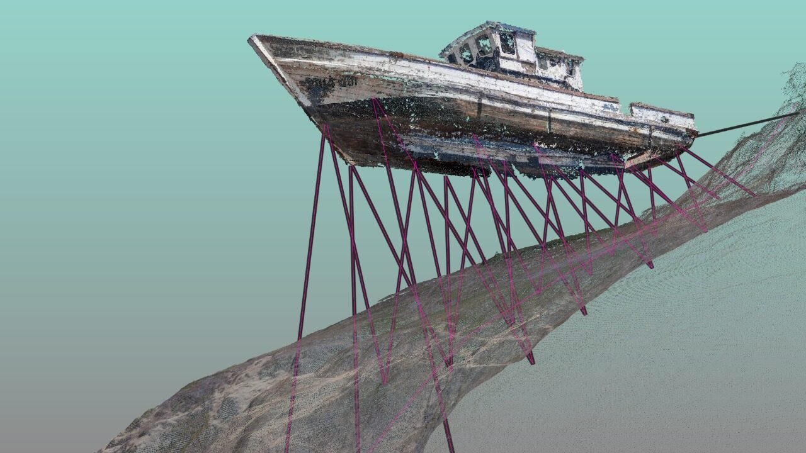
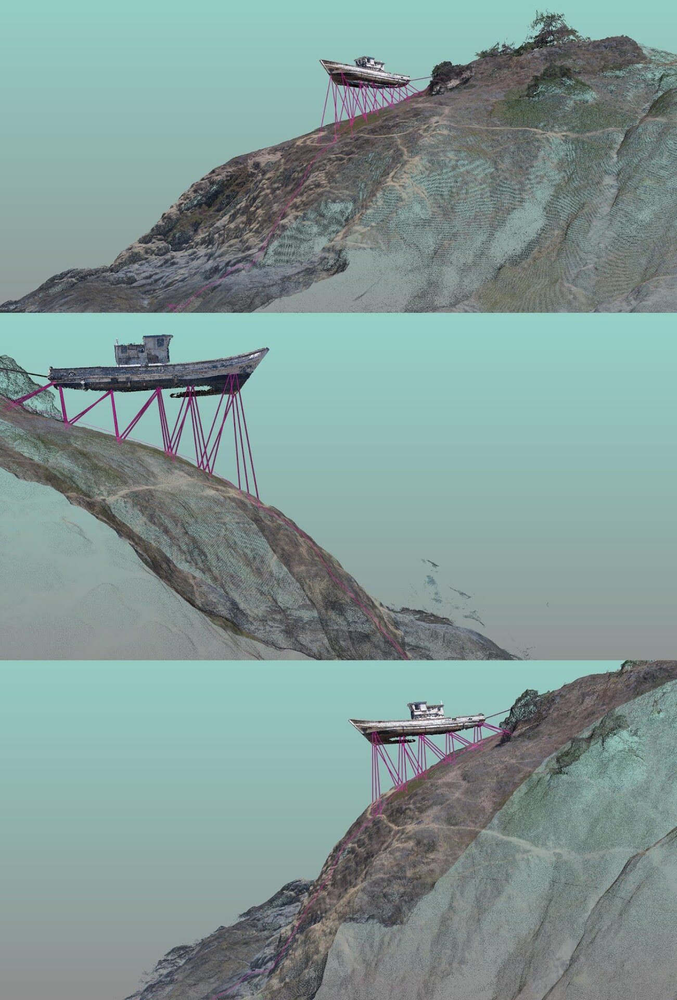
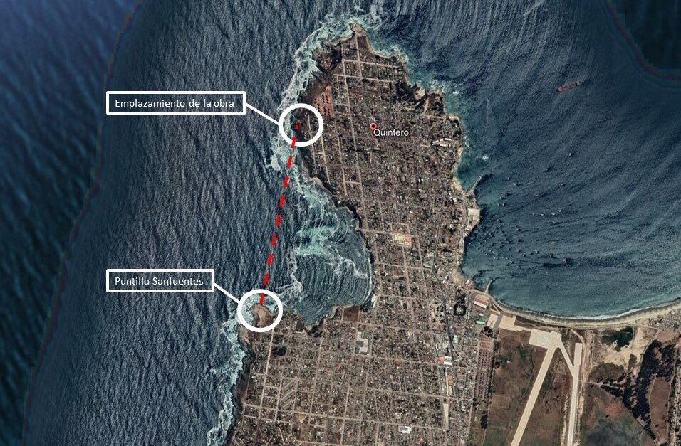
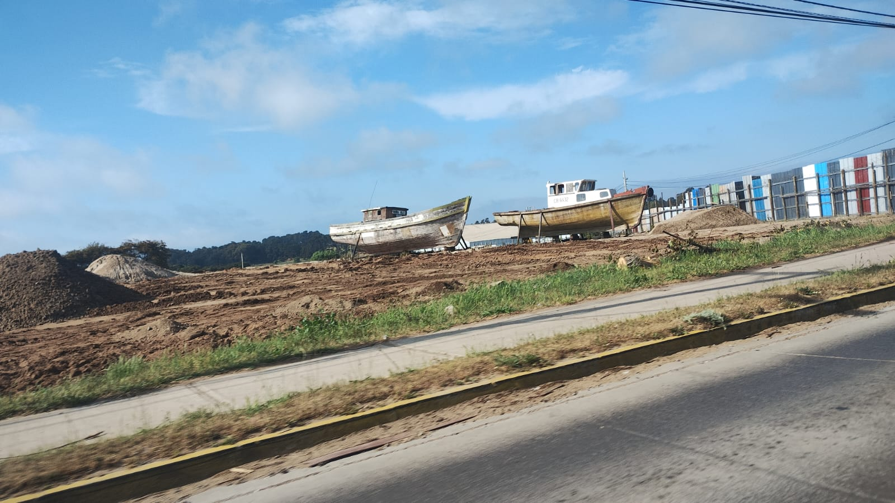

Dossier Nº 003
Pieza de Paisaje / Fata Morgana
Proyecto de intervención de un barco en desuso, propio de la zona costera de la bahía de Quintero, instalado, anclado y apuntalado sobre unos roqueríos en un acantilado de dicha ciudad puerto. En conjunto con Jorge Aguayo, 2021.
El barco reconfigurado
El barco intervenido es trasladado a un lugar donde es faenado, vaciado, desfondado y fragmentado, para en una etapa posterior ser reconfigurado, restituyendo así su unidad de objeto reconocible e identitario tan propio de la zona costera como son los barcos.
Anclaje y apuntalamiento
Se procede en el lugar a realizar excavaciones para las fundaciones que considera el proyecto de cálculo estructural, efectuando labores de anclaje y apuntalamiento, de manera que la escultura quede suspendida y expuesta a la intemperie costera con la máxima seguridad dispuesta por ingeniería.
El punto de observación
El emplazamiento en el acantilado, sobre los roqueríos, ha sido calculado respecto al punto de vista de un observador situado a la distancia, en el extremo opuesto de la bahía: la Puntilla Sanfuentes, conocida también como El Castillo del Loco. Desde ahí, la instalación se distingue a lo lejos, en el perfil del acantilado, sobrevolando el abismo como una Fata Morgana.




32°47′S · 71°32′O